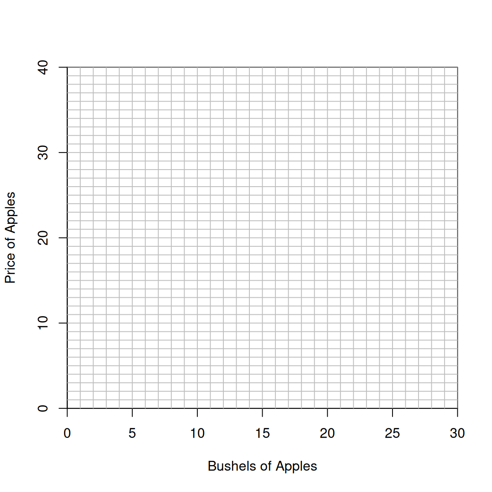

2 Supply and Demand
2.1 Instructions
2.1.1 An Apple Market
It’s a sunny Saturday at the Farmers’ Apple Market. Today, you and your classmates will take on the roles of buyers and sellers of apples. Your goal is simple: earn as much profit as you can.
2.1.2 Buying and Selling
At the start of the session, you’ll receive a personal information sheet that tells you whether you are a supplier (seller) or a demander (buyer).
If you are a supplier:
Your sheet lists a Seller Cost for one bushel of apples. This is what it “costs” you to produce your bushel.
You may sell at most one bushel per round.
If you sell at price \(P\) and your Seller Cost is \(C\), then your profit is \(P - C\).
If no buyer is willing to pay at least your cost, it’s better to skip selling and take zero profit.
Example:
A supplier with a Seller Cost of $10 sells a bushel for $16 and earns a profit of $6.
Selling at $30 yields a profit of $20.
Selling at $7 creates a loss of $3.
Not selling gives a profit of $0.
If you are a demander:
Your sheet lists your Buyer Value for a bushel—the maximum amount the apple is worth to you.
You may buy at most one bushel per round.
If your Buyer Value is \(V\) and you buy at price \(P\), your profit is \(V - P\).
If all available sellers want more than your value, it’s better not to buy.
Example:
A buyer with a value of $40 who buys for $16 earns a profit of $24.
Buying for $30 yields a profit of $10.
Buying for $45 creates a loss of $5.
Not buying yields a profit of $0.
2.1.3 Making Deals
To trade, find someone from the opposite group—suppliers can only trade with demanders, and vice versa. Negotiate however you like. You do not have to reveal your Seller Cost or Buyer Value, though you may if you think it helps your bargaining.
Once you agree on a price:
Fill out one sales contract together with your trading partner.
Bring it to the market manager.
After your contract is accepted, return to your seat.
Each contract lists the buyer, the seller, the price, and a few extra details. As contracts come in, the market manager will post the prices for everyone to see. You may only buy or sell one bushel per round, and you may also choose not to trade if no profitable opportunity exists.
2.1.4 Transactions, Rounds, and Sessions
A transaction is one completed deal—when a buyer and seller submit their contract.
A round starts when the market manager opens trading and ends when no more willing and mutually beneficial trades remain.
A session may include multiple rounds.
After the first round, the instructor may run additional rounds with the same Buyer Values and Seller Costs. Later rounds often work differently because you can use information from earlier trade prices posted on the board. Your role (buyer or seller) and your numbers stay the same within a session. In a new session, you’ll receive a new role and new values.
2.1.5 Advice for Traders
This exercise works best when people are active and engaged. Even if you’re usually quiet, feel free to lean into a more outgoing “trading mode.”
Seek out people.
Signal clearly what you’re hoping for.
If you think you can do better, don’t accept the first offer.
Remember:
Different classmates have different costs and values, so shopping around can pay off.
Pay attention to posted transaction prices: they give clues about what deals might be possible!
The basic strategy: buyers want to buy low; sellers want to sell high.
Most importantly: choosing not to trade is always better than taking a loss.
2.1.6 Warm-up Exercise
After reading the instructions, try these questions to check your understanding.
Suppose a supplier with a Seller Cost of $20 meets a demander with a Buyer Value of $40.
If they trade at a price of $35, what is the supplier’s profit? $____. What is the demander’s profit? $____. Total profit for both of them put together? $____.
What is the highest price that still allows both of them to make at least $1 of profit? $____. At that price, what is the total profit for both of them put together? $____.
What is the lowest price that still allows both to make at least $1 of profit? $____. At that price, what is the total profit for both of them put together? $____.
Answers to Warm-up Exercise questions
$5, $15, $20; $39, $20; $21, $20.2.2 Discussion of Supply and Demand Experiment
2.2.1 In search of a Theory
In the Apple Market experiment, the prices at which apples were traded seemed to be closing in on certain values. But what determines the values to which prices converged? It would be nice to have a theory that predicts market outcomes, not only for the specific market that we observed experimentally, but for a variety of markets under widely varying conditions. We would like a theory that allows us to answer questions like:
If every supplier’s Seller Cost increases by $10, will the market price increase by exactly $10, by less than $10, or by more than $10?
Suppose that the government decides to pay $10 to every person who buys a bushel of apples (this is called a subsidy to apple consumption). Will suppliers absorb some/all of the subsidy by raising prices, or will demanders get to keep the entire $10 subsidy?
If bad weather reduces the quantity of apples that each producer could supply, what will be the effect on the price of apples and what will happen to the total revenue of suppliers?
Economists have just such a theory—you probably know it as supply and demand; its more formal name is the theory of competitive equilibrium. This theory offers answers to the above questions and to many others. These answers can often be surprising or interesting. Of course, a theory that predicts market outcomes will not be much good if the predictions are not useful or accurate. Therefore it is important to see whether supply and demand theory goes a good job of predicting the outcomes of our experiments. If the theory does well as we add more elements of realism, then we can put some credence in its predictions for actual markets. If this simple theory does not perform well, then we must look for a better theory.
2.2.2 A Model of Competitive Markets
In our classroom experiment, particularly in the early rounds, some sellers were able to get higher prices for their apples than others. Similarly, some buyers were able to find a seller who would sell cheaply and others could only find sellers who insisted on a high price. Every participant in the market would like to get the best deal possible, but different participants will have different ideas about what is possible. To describe all market participants’ beliefs about the prices at which they can trade and their luck when meeting a buyer/seller would be very complicated, even for this simple market.
Instead of trying to describe this in full detail, let’s try to construct a simplified model of competitive markets. The art of good modeling in economics, as in all sciences, is to find the “right” simplifications. The model should remove enough complication from the actual situation to allow us to analyze and predict outcomes, without removing so much reality that it seriously distorts our predictions about the way the market will behave. We are looking for a manageable model of markets that makes good predictions of the outcomes that we observe in experimental markets and in actual markets of the commercial world. Specifically, we would like a model that uses the information that we have about the distribution of Buyer Values and Seller Costs to predict the average price and number of transactions that are likely to take place in the market.
An effective way to simplify this problem is to assume that all buyers pay the same price for apples and that all sellers sell at this same price. As you found in the classroom experiment, this assumption is not very accurate, especially in the first rounds of trading, but in later rounds, as traders become better informed about the prices they can hope to find, the differences between prices paid/received for apples by different people tend to disappear.
If there were just one price for apples, those suppliers who could make a profit at this price would sell apples and those who would take a loss would not sell any. Similarly, those demanders who could profit by buying apples at the prevailing price would buy and those who would lose money would not buy. At this price, it would be possible to satisfy everybody’s wishes only if the quantity of apples that demanders wanted to buy were the same as the quantity of apples that suppliers wanted to sell. At a randomly chosen price, there is no reason to expect that demanders would want to buy the same amount that suppliers would want to sell. But as we will see, there will be some price at which the total quantity of apples that demanders are willing to buy is equal to the total quantity that suppliers are willing to sell. This price, at which “supply equals demand,” is known as the competitive equilibrium price. The number of units bought and sold at this price is known as the competitive equilibrium quantity.
2.2.3 Graphing Supply and Demand
Supply curves and demand curves are the main tools that we use to study competitive equilibrium. The supply curve tells us the total amount of a good that suppliers would want to sell at each possible price. We can draw a supply curve if we know each supplier’s Seller Cost. In this experiment, since each supplier supplies at most one unit, the number of units that suppliers are willing to supply at any price \(P\) is equal to the number of suppliers whose Seller Costs are less than or equal to \(P\).
The demand curve tells us the total amount of a good that buyers would want to buy at every possible price. We can draw this curve if we know each demander’s Buyer Value. In this experiment, each demander buys either one bushel of apples or no apples, and thus the total number of bushels that demanders are willing to buy at any price \(P\) is equal to the number of demanders whose Buyer Values are greater than or equal to \(P\).
We can show the way that the interaction of suppliers and demanders determines the outcome in the market by drawing supply and demand curves on the same graph. Competitive equilibrium prices and quantities are found where the supply curve crosses the demand curve.
2.2.4 An Example
We will use a specific example to show how to draw supply and demand curves and find equilibrium prices and quantities. In this example:
There are 10 high-cost suppliers who have Seller Costs of $25 a bushel.
There are 20 low-cost suppliers who have Seller Costs of $5 a bushel.
There are 15 high-value demanders with Buyer Values of $30 for a bushel of apples
There are 15 low-value demanders with Buyer Values of $10 for a bushel of apples
This information is summarized in the table below:
| Type of Agent | Number of Agents | Cost | Value |
|---|---|---|---|
| Low-Cost Supplier | 20 | 5 | |
| High-Cost Supplier | 10 | 25 | |
| High-Value Demander | 15 | 30 | |
| High-Value Demander | 15 | 10 |
2.2.5 Making a Supply Table
A Supply Table shows the number of bushels of apples that suppliers would offer at each possible price. We can construct a Supply Table for the example market using the information in our first table, above.
| Price Range | Amount Supplied |
|---|---|
| \(P < \$5\) | 0 |
| \(\$5 < P < \$25\) | 20 |
| \(P > \$25\) | 30 |
In the example market, low-cost suppliers have a Seller Cost of $5 a bushel and high-cost suppliers have a Seller Cost of $25 a bushel. At any price below $5 a bushel, a supplier who sold a bushel of apples would lose money because it costs every supplier at least $5 to produce a bushel of apples. Thus at prices below $5, nobody would want to supply any apples, so the total amount supplied to the market would be zero. We therefore enter 0 as the amount supplied in the first line of the table.
If the price, \(P\), is between $5 and $25, the 20 low-cost suppliers can each make money by selling a bushel of apples, since their costs are only $5. But the high-cost suppliers would lose money if they sold apples for any price below $25, since it costs them $25 to produce a bushel of apples. Therefore, at prices between $5 and $25, the 20 low-cost suppliers will each sell a bushel of apples, but the high-cost suppliers won’t sell any apples. The total quantity supplied at prices between $5 and $25 will be 20 bushels, so we enter 20 as the amount supplied in the second line of the Supply Table.
At prices above $25, all of the suppliers (low- and high-cost) can make money by selling apples. Since there are 10 high-cost suppliers and 20 low-cost suppliers, the total amount supplied at prices above $25 is 30 bushels. Therefore we enter 30 as the amount supplied in the last line of the Supply Table.
2.2.6 Making a Demand Table
We can construct a Demand Table for this market in much the same way. The Demand Table shows the number of bushels of apples that demanders want to buy at all possible prices.
The highest Buyer Value for a bushel of apples is $30. If the price is about $30, no buyer will want to buy any apples. So for all prices above $30, the number of bushels demanded is 0. We record this in the first line of the table below.
| Price Range | Amount Demanded |
|---|---|
| \(P > \$30\) | 0 |
| \(\$10 < P < \$30\) | 15 |
| \(P < \$10\) | 30 |
If the price of apples is between $10 and $30, all 15 of the high-value demanders can make profits by buying a bushel of apples, but low-value demanders will lose money if they buy apples. So at prices between $10 and $30, the total demand for apples is 15 bushels, and we write 15 as the amount demanded in the second line of the table.
If the price of apples is below $10, then all of the demanders (low-value and high-value) can make a profit by buying apples. There are 15 high-value and 15 low-value demanders, so total demand for apples at any price below $10 is 30 bushels. Therefore we enter 30 as the amount demanded in the bottom line of the table.
2.2.7 Drawing Supply and Demand Curves
The supply and demand tables will help you to graph the supply curve and the demand curve. The first step is to draw a pair of axes, with price of apples measured on the vertical axis and quantity of apples measured on the horizontal axis. This has been done in the figure below.

2.2.8 Drawing the Supply Curve
A supply curve shows the total number of apples that sellers would be willing to sell at each possible price. You can use the information in the Supply Table to draw a supply curve. As you read this discussion, it will help if you follow through by drawing the lines and points requested in the text. Your graphs will be easier to read if you draw the supply and demand curves in two different colors.
As we see from the Supply Table, at prices below $5, the amount of apples supplied is 0. Thus the supply curve must show that at these prices no apples will be supplied. This means that the supply curve includes a vertical line that follows the vertical (price) axis from the origin (0, 0) up to a point (0, 5) where the price is $5 and quantity is 0. Draw this line segment.
From the Supply Table, we see that at any price between $5 and $25, the total quantity supplied is 20 bushels. Therefore the supply curve includes a vertical line segment drawn from the point (20, 5) up to the point (20, 25). Add this line segment to your graph.
At prices above $25, we see from the Supply Table that the quantity supplied is 30 bushels. Therefore the supply curve includes a vertical line starting at the point (30, 25) and going straight up to the point (30, one zillion). Since we only have so much space to work with, just draw a line from the point (30, 25) to the top of the box.
Your supply curve so far contains three vertical line segments. But we haven’t yet answered the question of what happens at a price of exactly $5 or exactly $25. At a price of $5, all of the high-cost suppliers would lose money if they sold any apples. Low-cost suppliers wouldn’t make any money, but they wouldn’t lose any, either. They will be indifferent between selling and not selling. Since at a price of $5, each of the 20 low-cost suppliers would be satisfied with supplying any quantity between 0 and 1 bushel, we can say that at a price of $5, suppliers in total would be willing to supply any quantity of apples between 0 and 20 units. We show this fact by adding a horizontal segment at a price of $5 on our supply curve. On the graph, this segment is a line from the point (0, 5) to the point (20, 5).
At a price of $25, all 20 of the low-cost suppliers will want to supply apples, and the 10 high-cost suppliers would just break even. At this price, each of the 10 high-cost suppliers is willing to supply any amount between zero and one unit. So at a price of $25, the total quantity supplied can be any amount between 20 and 30 bushels. This implies that the supply curve includes a horizontal segment at a price of $25. This segment runs from the point (20, 25) to the point (30, 25).
2.2.9 Drawing the Demand Curve
Now that you have drawn a supply curve, it is time to draw a demand curve. The demand curve shows the total quantity of apples that demanders would like to buy at each possible price. Like the supply curve, the demand curve consists of vertical and horizontal line segments. You can use the Demand Table from above to draw the demand curve, much as you used the Supply Table to draw the supply curve. You can probably do this without reading more details, but in case you get stuck, you will find detailed hints at the end of this document. You should try to draw the supply and demand curves before peeking at it. After you’ve tried, take a look to see if you got it right.
2.3 Finding Equilibrium Price and Quantity
The competitive equilibrium price for a good is the price at which the total amount that suppliers want to sell is equal to the total amount that demanders want to buy. The quantity that is both supplied and demanded at the competitive equilibrium price is the competitive equilibrium quantity. If you have drawn the supply and demand curves on a graph, how can you find the competitive equilibrium price? Before reading the answer below, see if you can figure it out on your own.
Answer:
Remember that the quantity demanded or supplied at any price is found by locating the price on the vertical axis and reading across until you reach the supply or demand curve. If at some price, supply equals demand, it must be that the supply and demand curves touch at this price. Thus, to find the competitive equilibrium price, simply draw the supply and demand curves and find where they cross. If the two curves intersect at a single point, then you can read across to the vertical axis to find the competitive equilibrium price and down the horizontal axis to find the competitive equilibrium quantity. (Sometimes the supply and demand curves may overlap at more than one point. In this case, there will be more than one competitive equilibrium price and/or quantity.)If you look at the supply and demand curves that you drew, you can see that at any price higher than the competitive equilibrium price, suppliers want to sell more apples than demanders want to buy. At any price lower than the equilibrium price, demanders want to buy more apples than suppliers want to sell. However, at the competitive equilibrium price, suppliers want to sell exactly as many apples as demanders want to buy.
2.4 Profits of Buyers and Sellers
2.4.1 Reservation Prices and Consumers’ Surplus
In our classroom experiment, if a supplier sells a bushel of apples for a price higher than her Seller Cost she will make a profit, and if she sells for a price lower than her Seller Cost she will lose money. We define a supplier’s reservation price for a unit of a good to be the lowest price at which she is willing to sell this unit. In this experiment, every supplier’s reservation price for a bushel of apples is equal to her Seller Cost.
In this experiment, a demander will make a profit if he buys a bushel of apples for a price lower than his Buyer Value and he will take a loss if he pays more than his Buyer Value. We define a demander’s reservation price to be the highest price that he would be willing to pay for a unit of the good rather than do without. In this experiment, the most that a demander would be willing to pay for a bushel of apples is his Buyer Value and thus his reservation price is equal to his Buyer Value.1 We sometimes refer to a supplier’s reservation price as her minimum willingness-to-accept and to a demander’s reservation price as his maximum willingness-to-pay.
In real-world markets, some goods are used by people who intend to re-sell them or use them in manufacturing, while other goods are purchased by people who buy them for their own use and enjoyment. Those who demand goods for their own consumption are known as consumers. In experimental markets, we motivate demanders to act like real-world consumers by assigning Buyer Values that will be paid to them by the market manager if they buy a unit of the good(s). In real-world markets, there is of course no market manager to make such payments. Instead, consumers receive benefits directly from consuming the goods that they buy.
A demander’s consumer surplus from purchasing a unit of some good is defined to be the difference between his reservation price and the price he actually has to pay. In this experimental market, where demanders’ reservation prices equal their Buyer Values, a buyer gets a consumer surplus equal to the difference between his Buyer Value and the price that he pays. Another name for this difference is demander’s profit. We’ll use the terms consumer’s surplus and demander’s profit interchangeably.
2.4.2 Calculating Profits and Consumers’ Surplus
Let us calculate total profits made by suppliers and demanders for a market with the supply and demand curves shown in the figure below. First we calculate the total profit of all suppliers. In this example, low-cost suppliers each have costs of $5 per bushel and high-cost suppliers each have costs of $25 per bushel. At the equilibrium price of $10 per bushel, while the low-cost suppliers can make a profit by selling a bushel of apples, the high-cost suppliers would make losses if they produced. So each of the 20 low-cost suppliers will want to supply one bushel, and none of the high-cost suppliers will want to supply any apples.
The only sellers at $10 are the 20 low-cost suppliers. Each of the 20 low-cost suppliers receives $10 for her apples and has to pay her Seller Cost of $5. Thus, her profit from selling apples is \(\$10 - \$5 = \$5\). The total profits made by the 20 low-cost suppliers is therefore \(20 \times \$5 = \$100\). Since at a price of $10, the high-cost suppliers do not supply any apples at all, they have zero revenue, zero costs, and zero profits. Total profit of all suppliers equals the total profit of low-cost suppliers plus total profit of high-cost suppliers. This is \(\$100 + 0 = \$100\).
Now we calculate total consumers’ surplus for all of the demanders in the market. At the competitive equilibrium price of $10, the high-value demanders, who have Buyer Values of $30, will make a profit by buying apples. The consumer’s surplus of each high-value demander is \(\$30 - \$10 = \$20\). Since there are 15 high-value demanders, the total consumers’ surplus of all high-value demanders is \(15 \times \$20 = \$300\). Each of the low-value demanders has a Buyer Value of $10 for a bushel of apples. Since the price of apples is also $10, the low-value demanders who buy apples will each have a consumer’s surplus of \(\$10 - \$10 = \$0\) (they are neither better nor worse off than low-value demanders who don’t buy any apples). Since all low-value demanders receive zero profits, whether or not they buy apples, the total amount of consumers’ surplus received by low-value demanders is 0. Therefore, the total amount of consumers’ surplus made by all demanders is \(\$300 + \$0 = \$300\).
We also want to measure the total profit of all market participants. This is obtained by adding the total profit of suppliers to the total consumers’ surplus of demanders. In the example considered here, total profit of all market participants is $100 + $300 = $400.
The figure above shows a useful geometric way to find total profits in competitive equilibrium from the graph of the supply and demand curves. First draw a horizontal line from the point E, where the supply and demand curves cross, to the point A, where this horizontal line meets the vertical axis. The area that is below the line AE and above the supply curve represents the total profits made by suppliers. The area above this line and below the demand curve represents the total consumers’ surplus. This geometric trick works because for each unit sold, the vertical distance from the line AE to the supply curve equals the profit made by the seller of that unit. If we add these profits over all units sold, we have the total profits made by suppliers, which is the area of the region labeled “Suppliers’ Profits.” Similarly, for each unit sold, the vertical distance between the demand curve and the line AE is the Consumer’s Surplus (Demander’s Profit) made by the buyer of that unit. Adding these surpluses over all units sold, we have the total consumers’ surplus, which is the area of the region labeled “Consumers’ Surplus.”
Other Implications of Competitive Theory
So far, we have been interested in how well competitive equilibrium works at predicting the outcome in trading environments like our classroom market. If competitive equilibrium turns out to be a good predictor of what happens, then it will be interesting to know more about other implications of the theory.
Who Trades in Competitive Equilibrium?
Competitive equilibrium theory makes interesting predictions about which suppliers will sell and which demanders will buy. In competitive equilibrium, it must be that if a supplier can make a profit by selling at the competitive price she will do so, and if she would make a loss, she will not sell. This implies that every supplier whose Seller Cost is lower than the competitive equilibrium price will sell a bushel of apples, and no supplier whose Seller Cost is higher than the competitive equilibrium price will sell any apples. Similarly, in competitive equilibrium, every demander will buy if he can make a profit by buying at the competitive equilibrium price and will not buy if he makes a loss from doing so. Therefore the theory predicts that every demander whose Buyer Value is higher than the competitive equilibrium price will buy a bushel of apples, and every demander whose Buyer Value is lower than the competitive equilibrium price will buy no apples. Predicting the actions of suppliers or demanders when their Seller Costs or Buyer Values are exactly equal to the competitive price is slightly more complicated. If a supplier’s Seller Cost equals the price, she is indifferent between selling and not selling. Similarly, if a demander’s Buyer Value equals the price, he is indifferent between buying and not buying. In equilibrium, however, we know that the total number of apples sold has to equal the total number of apples bought. This fact gives us enough information to calculate the total number of bushels of apples traded by sellers or buyers who make exactly zero profits by trading. The best way to see how to do this is to look at an example.
Example:
Let us consider a market in which the demand and supply curves are as described in the last figure above. Let us suppose that each supplier can supply at most one bushel and that each demander can use at most one bushel of apples. There are 20 suppliers with Seller Costs of $5 and 10 suppliers with Seller Costs of $25, and there are 15 demanders with Buyer Values of $30 and 15 demanders with Buyer Values of $10 for a bushel of apples. We see from the figure that the competitive equilibrium price is $10. Since the 20 suppliers with Seller Costs of $5 will al make a profit at this price, they will each supply one bushel in competitive equilibrium. Since the 10 suppliers with Seller Costs of $25 would all lose money if they sold, none of them will supply any apples. The 15 demanders with Buyer Values of $30 will all make a profit by buying apples at $10, so we know that in equilibrium they must all be buying apples. What about the demanders with Buyer Values of $10? Since the competitive equilibrium price of apples is $10, they are just indifferent between buying and not buying. Looking at the demand and supply curves in the figure, we see that the total number of bushels of apples that are sold in competitive equilibrium must be 20. We know that the 15 high-value demanders will each demand one bushel. This leaves 5 bushels to be consumed in equilibrium by the low-value demanders. This can happen only if 5 of the demanders with Buyer Values of $10 buy apples (and the other 10 do not).
2.4.3 Efficiency and Competitive Equilibrium
Economists are interested in the efficiency of market outcomes. A market outcome is said to be efficient if the sum of the profits made by all individuals in the market is as large as possible. A market outcome is said to be inefficient if some other possible arrangement of trades will result in higher total profits for all participants. If one set of market institutions leads to an inefficient outcome, then it may be possible to find alternative institutions that result in higher total profits. Higher total profits could, in principle, be redistributed in such a way that everyone is better off after the redistribution than they were before the change.
Experimental economists define the market efficiency of an experimental market outcome to be the actual total profits of market participants expressed as a percentage of the highest possible amount of profits that could be achieved in the market. If the total profits actually made by market participants are equal to the maximum possible amount, then market efficiency is said to be 100%. If the total profits actually made are only 80 percent of the maximum possible amount, then market efficiency is said to be 80 percent, and so on.
Among all possible arrangements of traders, it turns out that if the profits of buyers and sellers depend only on the trades that they make themselves, the market efficiency of competitive equilibrium is 100%. This important result can be stated as follows:
Proposition: In markets where the profits of buyers and sellers depend only on the trades that they themselves make, competitive equilibrium is efficient. That is, the sum of the profits of buyers and sellers in competitive equilibrium is at least as large as it would be with any other arrangement of trades.
You already know nearly enough to complete a proof of this proposition. A rigorous, general proof requires a slightly more intricate argument than is appropriate for this course, and is probably best left for an intermediate microeconomic theory course. However, the following sketch of an argument can be expanded to provide a rigorous proof.
The total amount of profits made by buyers and sellers is equal to the sum of the Buyer Values of those who buy a unit of the good minus the sum of the Seller Costs of those who sell a unit of a good. Recall from the warm-up exercises that (regardless of the price) the total profit made by they buyer and seller in any trade is equal to the buyer’s Buyer Value minus the seller’s Seller Cost. Therefore the total profits made by any arrangement of trades are completely determined by who makes trades and who does not. In competitive equilibrium, every demander who buys a unit of the good has a Buyer Value that is at least as high as the competitive equilibrium price, which in turn is at least as high as the Seller Cost of every supplier who sells. Moreover, every demander who does not trade has a Buyer Value that is no larger than the competitive equilibrium price, and every supplier who does not trade has a Seller Cost that is no smaller than the competitive equilibrium price. Using these facts one can show that you cannot increase total profits above the competitive equilibrium level either by having more or by having fewer people trading, nor by exchanging some of the individuals trading for some of those who are not trading.
2.5 Hints on Supply and Demand Curves
Here are the promised hints on how to draw a demand curve.
The highest Buyer Value for apples is 30, so we know that at prices above 30, nobody will want to buy apples. Therefore the demand curve includes a vertical line extending from the point (0, 30) to the top of the box. At prices greater than 10 but less than 30, the demanders with Buyer Values of 30 will want to buy apples, and the demanders with Buyer Values of 10 will not want to buy. There are 15 demanders with Buyer Values of 30, so that 15 units will be demanded at any price between 10 and 30. This means that the demand curve includes a vertical segment running from (15, 10) to (15, 30). At prices below 10, every demander wants to buy one bushel. There are 30 demanders in all, so total demand will be 30 bushels. The demand curve, therefore, includes a vertical segment running from (30, 0) to (30, 10).
At a price of exactly 30, the 15 high-value demanders are indifferent between buying or not buying. Total demand could be any amount between 0 and 15. Therefore the demand curve includes a horizontal segment running from (0, 30) to (15, 30). At a price of exactly 10, the 15 high-value demanders will all want to buy one unit. The 15 low-value demanders will be indifferent between buying and not buying, so at a price of 10, demand can be any amount between 15 and 30. Therefore the demand curve includes a horizontal segment running from (15, 10) to (30, 10).
The resulting graph is displayed below.
As we will see in later experiments, suppliers’ reservation prices are not always the same as their Seller Costs, and demanders’ reservation prices are not always the same as their Buyer Values.↩︎